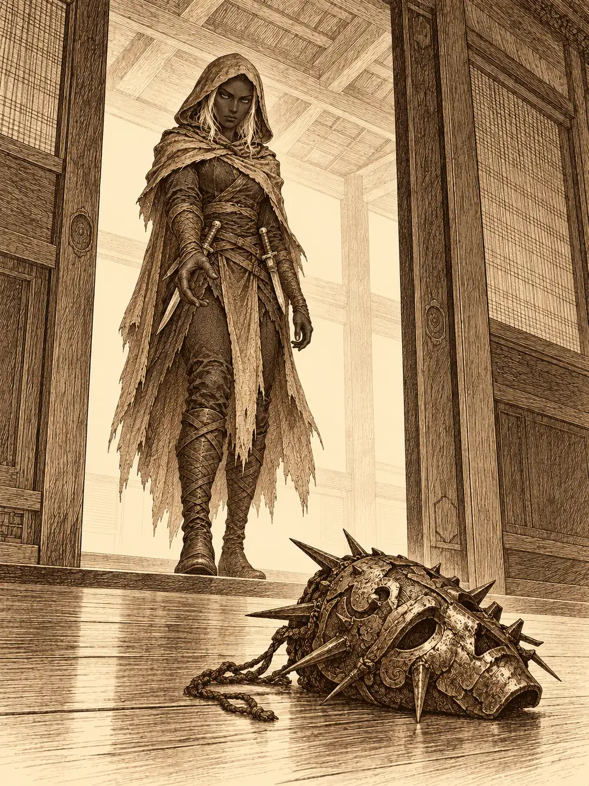

Capítulo 83
El juicio
Libro VI · La Puerta Negra
Guxi había extendido sobre la mesa de la base de Sho todos los papeles que tenía: el libro de cuentas de la casa de inversiones, los documentos y la llave del balneario, sus propias notas con letra apretada. Lo único que faltaba era lo más importante. La caja que debía abrir con aquella llave ya no estaba donde la habían dejado, y nadie supo decirle dónde había ido a parar.
"Contadme otra vez qué pasó", pidió.
Katari repitió su versión. Ella estaba en los pasillos y alguien de la casa le había cedido el paso. Después llegaron los guardias, los echaron a la calle, les tomaron el nombre y les dijeron que habría juicio. Ermitaño, en cambio, no tenía mucho que discutir. Había entrado disfrazado, haciéndose pasar por un antiguo cliente, para llamar la atención y abrir camino a los demás, hasta que el disfraz dejó de convencer. Lo peor que había hecho, dijo, era volcar una mesa con unas cuantas monedas.
Luego sacó una carta.
"Me ha llegado esto de Shigeru".
La leyó en voz alta. El monje decía que se había enterado del juicio por aquel supuesto allanamiento y robo, que lamentaba no poder acompañarlos porque Miyamoto lo necesitaba, y que deseaba de corazón que las pruebas que habían conseguido en el balneario demostraran su inocencia.
"Qué buen hombre", murmuró Katari.
El conductor de la caravana había venido a apoyarlos. Ermitaño, ya que lo tenía delante, le preguntó qué tal le venía devolverle las doscientas monedas que le había prestado para el oficio. El conductor se miró los zapatos. Por ahora, no.
Se vistieron con lo mejor que tenían, que no era mucho. El conductor solo tenía la túnica blanca de iniciado que le habían dado en su templo. Tip y Top llamaron a la puerta para escoltarlos al castillo, y por el camino les aseguraron que sería un mero trámite.
La sala de audiencias estaba llena de nobles. Sentaron a Guxi a un lado del shogun, como defensor; al conductor, un poco apartado. Al otro lado esperaba uno de los jefes de la casa de inversiones, un hombre de modales untuosos que, en cuanto le dieron la palabra, se arrodilló.
"Señoría, estos señores se colaron en nuestro local. Ese iba disfrazado. Entraron en zonas prohibidas donde guardamos cuentas que no puede ver la competencia. Y cuando repasamos, nos faltaban tres cajas fuertes, justo del día en que ellos entraron. Pedimos una indemnización y que nos devuelvan las cajas".
Guxi abrió su carpeta.
"He estudiado todos los papeles del shogunato que tienen que ver con esa casa, y sinceramente, no me cuadran. Por eso mis compañeros fueron a investigar".
Enseñó las cifras. Los nobles se inclinaron sobre los papeles, murmuraron, asintieron; aquello merecía una investigación. El representante protestó que ellos no habían hecho nada malo y que alguien se había llevado sus cajas. El conductor, desde su rincón, levantó la mano.
"Esta gente me defendió cuando los yokai atacaron mi caravana. Son gente buena".
El shogun lo reconoció y asintió, y le dio un ataque de tos tan fuerte que Rua le puso la mano en la espalda.
"Ya sabes", le dijo a su esposa. "La edad. Todavía me estoy recuperando del último resfriado".
Llamó a Ermitaño y a Katari. Les preguntó por qué habían entrado en aquel local sin informar a las autoridades. Katari repitió que le habían cedido el paso y que no tenía sentido molestar a los guardias antes de saber si había algo que investigar.
"Señorita, eso es abuso de poder. Si cada uno empieza a entrar por su cuenta en los locales, podrían hacerlo en cualquiera. ¿Y si no hubiera habido ninguna cuenta extraña?".
Discutieron. Que si Katari tenía permiso o no, que si los guardias la habían visto donde no debía estar, que si el disfraz de Ermitaño. El conductor pidió la palabra otra vez, hizo una reverencia tan profunda que la frente le tocó el suelo, y señaló que nadie había demostrado que sus compañeros hubieran llegado a la cámara donde estaba el dinero, que estaría protegida por mil trampas. El representante replicó que alguien capaz de disfrazarse podía haber subido a cualquier parte. Nadie pudo demostrar ni una cosa ni la otra.
El shogun levantó la mano.
"Las cuentas de esa casa se investigarán. Pero la casa está afiliada al shogunato, y esto nos hace perder credibilidad a todos. Estas cosas se hacen con discreción, avisando. Las cajas tendrán que buscarse. No hay muchas pruebas, pero ahora mismo sois sospechosos". Hizo una pausa. "Habrá sanciones. Se investigarán vuestras bases, todas, y cada uno de los cazadores, incluidas sus capacidades mágicas. Señor Guxi, apunte".
Katari intentó decir que habría sido más honorable para el shogunato no dar su brazo a torcer con una empresa que cometía irregularidades. El shogun la escuchó con paciencia.
"Se investigará, señorita. Pero su castigo no anula el de ellos".
Entonces se abrieron las puertas y entró Danifae.
Los guardias se pusieron nerviosos. La drow los ignoró, pasó junto a Katari, le acarició la espalda con una confianza que hizo que la druida se tensara y le susurró al oído que tranquila, que ella la sacaba de aquella. Después hizo una reverencia ante el trono.
"Señoría, tengo mejores pruebas. He estado ocupada últimamente, investigando esa casa de inversiones".
"Acabamos de juzgar a esta gente por hacer exactamente eso".
"Por eso mismo. Los cazadores sí han estado haciendo su trabajo".
Sacó algo de su bolsa y lo tiró al suelo, a los pies del shogun. Era una máscara con un símbolo de pinchos que todos los cazadores reconocieron: la de los sectarios de Otakemaru.
"Encontré varias como esta en esa casa. ¿No es así, señor?".
El representante palideció.
"Eso no es nuestro. ¿Cómo puede probarlo?".
Danifae sacó una daga y se la lanzó. Se le clavó en el pecho.
El hombre no cayó. Empezó a sonreír, y la sonrisa se le fue estirando más de lo que una cara humana puede estirarse. Le salieron pinchos de la boca. Guxi y Katari corrieron hacia Rua, y del vientre del hombre brotó una pata de araña enorme que se clavó en el suelo delante de ellos y les cortó el paso. Danifae los agarró a los dos y los apartó. Al hombre le salieron más patas, la cara se le deformó, le crecieron cuernos, y cuando terminó de transformarse era una araña gigantesca con cabeza de toro.
"Malditos seáis", rugió con una voz que le salía de lo más hondo de la garganta.
Escupió un hilo de tela que envolvió a Rua, la arrastró hacia sí, trepó por la pared y rompió el techo.
Los samuráis rodearon al shogun. Él gritaba el nombre de su esposa.
Katari tocó a Ermitaño y el clérigo se transformó en un águila gigante, tan grande que podían montarse todos encima. El conductor subió de un salto. Guxi le aseguró al shogun que harían todo lo posible por traer a Rua de vuelta y subió también. Danifae le tendió la mano a Guxi para que la ayudara a subir.
"¿Ves? Tenía pruebas".
"Podías haber avisado".
"Estaba haciendo el trabajo que deberías haber hecho tú".

El águila despegó. Desde arriba siguieron a la araña de tejado en tejado. Iba rompiendo paredes y alguna torre, con Rua colgando de su abdomen como un fardo, hasta que llegó al lago del centro de Sho, donde se acababan los tejados, y se detuvo allí, mirando alrededor. La gente huía gritando. El águila los dejó en tierra.
El conductor fue el primero en disparar. Su flecha alcanzó a la araña, y él se quedó en el sitio, buscando un ángulo mejor. Katari intentó ordenarle a la criatura que se rindiera, con una magia que debería haberse metido en su voluntad, y la criatura ni lo notó. Se volvió hacia la druida con una sonrisa y le escupió un chorro de tela que la envolvió y la sujetó al suelo. Después cargó contra Guxi con la cabeza de toro por delante, y el artífice aguantó el golpe sin caer.
Danifae corrió entonces hacia la bestia, trepó por una de sus patas hasta el abdomen, cortó la tela que sujetaba a Rua y saltó con ella en brazos. A mitad del salto, las dos desaparecieron y reaparecieron lejos de la bestia, a salvo.
Katari, todavía atrapada, no podía moverse, pero sí hablar. Pronunció una palabra y la araña se encogió, se encogió, y se convirtió en un pato.
"No le peguéis", pidió alguien.
Guxi aprovechó para cubrir al pato con una red de telaraña. El pato le dio un picotazo y falló. Poco después, el pato volvió a ser una araña con cabeza de toro, y la pelea se volvió fea. La criatura cargaba, mordía, envenenaba. Le hundió los dientes a Katari, que seguía enredada, y el veneno le corrió por las venas; luego se volvió contra Ermitaño y lo alcanzó de lleno. El clérigo se retiraba, volvía, curaba, levantaba a su alrededor los espíritus guardianes, mandaba contra la bestia su arma de luz. El conductor desaparecía entre las sombras de la orilla y volvía a aparecer para disparar. Katari llamó a los rayos del cielo, aunque estaba despejado, y luego curó a todos los que tenía cerca. Danifae volvió, le arrancó a Katari las telas de encima y maldijo a la criatura.
Fue Guxi quien la remató. Apuntó con su aparato, y el gorro que le había dado Suzaku le reforzó el fuego del disparo. La descarga le dio a la araña de lleno. La bestia chilló, agitó las patas hacia arriba y empezó a deshacerse, hasta quedar en el suelo con la forma de un hombre.
El conductor se acercó con el cuchillo de desollar. Pensaba que de aquella quitina se podía sacar algo. Katari prendió fuego a los restos antes de que llegara.
Rua, con jirones de tela todavía pegados al vestido, se acercó a Guxi.
"Gracias por venir tan rápido. Te vi correr a protegernos. El shogun lo sabrá".
"Es mi deber".
Llegaron guardias con las espadas desenvainadas, y Rua los calmó. La escoltaron de vuelta al castillo.
El shogun abrazó a su mujer. Tosía más que antes, encorvado.
"Ha sido tu oficial", le dijo Rua, señalando a Guxi. "Fue el primero en salir a protegernos".
El shogun se acercó al artífice apoyándose en ella. Guxi se arrodilló.
"No. Levántate. Somos nosotros quienes deberíamos arrodillarnos".
Reconoció que las sospechas sobre aquella casa estaban bien fundadas. Lo más probable era que los sectarios la usaran para conseguir dinero y debilitar Kuroto desde dentro. Recordó que alguien había acusado a Guxi de no pagar a los cazadores y que los registros habían demostrado lo contrario, y ahora, además, el artífice los defendía. Mandó traer un cofre pequeño y lo abrió delante de él.
Dentro había una pistola. Era una maraña de engranajes, tubos y botones de colores, y de vez en cuando soltaba un hilo de vapor aunque estuviera apagada.
"Esta arma era de la familia de los shogun. La llevaban aquellos que tenían un gran título. Ahora es tuya".
Guxi la cogió con las dos manos. En cuanto se vinculó a ella sintió que podía mantener unido a sí un objeto mágico más de los que podía antes. Y supo que, durante un rato, a voluntad, sus aparatos golpearían con más fuerza, o lo protegerían mejor.
El shogun se volvió hacia Danifae.
"Me habían hablado de usted, muchacha. Parece que esas quejas no estaban muy bien fundadas. Ha ayudado al shogunato. Se lo agradezco".
Danifae aceptó el agradecimiento con un gesto de reina. Luego el shogun se dirigió a todos.
"Nos disculpamos ante vosotros, cazadores. Debimos confiar más".
Todos los nobles, Rua, los samuráis, inclinaron la cabeza ante ellos. De las sanciones con que había empezado la audiencia no se volvió a hablar.
Katari se acercó al shogun y le pidió la mano. Con su magia buscó en él veneno o enfermedad, y encontró un resfriado fuerte, de los que se agarran al pecho de los viejos. Lo curó. La edad no se la podía quitar, pero el shogun respiró hondo y dijo que se sentía mucho mejor. Ermitaño, por si acaso, le dio su bendición.
Danifae caminó con ellos de vuelta a la base. Se quejaba de los guardias del shogun, que llevaban una temporada siguiéndola a todas partes, y estaba segura de que había sido cosa de Aka. Ermitaño y Katari le dieron las gracias por lo que había hecho; le debían una. Mientras tanto, por el vínculo mental, Katari le recordó a Ermitaño lo que se había dicho de ella bajo el círculo de la verdad.
Danifae le regaló cinco pieles al conductor, porque ella también desollaba, y los invitó a todos a cerveza. Tip y Top casi se pegaron por ver quién iba a buscarla.
Luego, con la jarra en la mano, empezó a hablar de las esferas. Llevaba encima una maldición de Lolth, dijo, una de esas que ni los grandes clérigos habían conseguido quitarle. Lo único que había encontrado que podía librarla eran aquellas esferas. Ya tenía tres. La cuarta, la de fuego, se la había tragado el demonio de Gur, y llevaba semanas esperando a ver si la expulsaba.
Se llevó a Ermitaño aparte, le dio unos golpecitos cariñosos en la armadura y le habló en voz baja.
"Ya sé en qué me puedes ayudar. A sacarle esa esfera".
Ermitaño le dijo que lo estudiaría.
Katari, mientras tanto, le enseñó a Guxi la lista de las bendiciones de los guardianes. Faltaba una que, en teoría, tenía alguien, y no sabían quién. Lo dejaron para más adelante. Luego la druida le preguntó qué relación tenía con Danifae.
"Me cae bien. Es una historia larga", dijo Guxi. "Tengo un medio hermano que es un drow. O hermanastro. No tenemos sangre en común. Mi padre es muy especial".
Le dijo su nombre: Gelbreak. Katari lo miró un momento.
"Pues ese es el hermano de Danifae".
Guxi se quedó callado, haciendo la cuenta. Así que ahora tenía también una hermanastra.
"Siempre igual", dijo al fin. "Una cosa buena y otra mala".
Y se fue a dormir al aire libre, sin despedirse. Dentro, el conductor bebía con Tip y Top, y Danifae seguía hablando en voz baja con Ermitaño junto a la puerta.